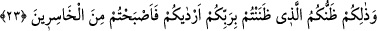
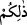
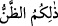
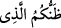

hatırlayana ise muhtemelen ilâhî ismet ve tevfik gelip onu bundan vazgeçirecektir.
Âhiret rezilliği dünya rezilliğinden daha berbaddır. Çünkü âr değil, ateş söz konusudur.
Aksine, “yaptıklarınızdan çoğunu” gizlendiğiniz sırada, yapmakta olduğunuz
şeylerin; yani gizli günahların birçoğunu “Allah’ın bilmeyeceğini” yani bunların
âhirette ortaya dökülmeyeceğini “sanıyordunuz.” İşlediğiniz günahlara işte bu yüzden
cür’et ettiniz!
Bu âyet, Allah’ın cüz’î şeyleri bilmediğine inanan zındık felsefecilere de işâret
ediyor.
Burada, ayrıca organların şâhidlik ettikleri hususları bizzat kendilerinin o suçlar
işlenirken bilmediğine, bilâkis Allah’ın bildirmesiyle şâhidlik edecekleri de haber
verilmiş olmaktadır. Birçok insanı cehenneme ‘Allah’ın, gizlice yapılanları değil,
açıktan işlenenleri’ bildiği inancı götürmüştür.
İbn Mes’ûd’un şöyle dediği rivâyet edilir: Kâbe’nin örtüsüne gizlendiğim bir sırada,
ikisi Sakîfli biri Kureyşli -ya da biri Sakîfli ikisi Kureyşli- göbekli, iri yapılı fakat
anlayışları kıt üç kişi içeri girdi; -denildiğine göre, Sakîfli olan, Abdüyâleyl, iki
Kureyşli ise Rebîa ve Safvân b. Ümeyye imiş.- İçlerinden biri: “Ne dersiniz, Allah
bizim konuştuklarımızı işitiyor mudur?” diye sorunca, diğeri: “Eğer sesli konuşursak
işitir, ama sessiz olursak işitmez” dedi. Ben de bundan Hz. Peygamber’e bahsettim; bu
âyet işte bunun üzerine indi.
Bu durumda, (Cenâb-ı Hak’tan) hikâye edilen söz konusu hüküm sadece bu inançta
olan inkârcılara özgü demektir. ‘Zan’ ile hakîkî mânâyı da içine alan mecâzî bir anlamın
ve bundan kaynaklanan aynı minvâldeki diğer amellerin kasdedilmiş olması muhtemelen
daha uygundur. Tıpkı “malının kendisini ebedî kılacağını sanıyor” (Hümeze 104/3)
âyetindeki gibi ki, ‘malının kendisini sürekli canlı tutacağını sanan biri gibi davranıyor’
anlamındadır. Böylece hikâye edilen durum, bütün kâfir türlerini kapsamış olacaktır. el-
İrşâd’da da böyle geçer.
23. Rabbiniz hakkında beslediğiniz zan var ya, işte sizi o mahvetti ve ziyana
uğrayanlardan oldunuz.
Ey Allah düşmanları! “Rabbiniz hakkında beslediğiniz zan var ya, işte sizi o
mahvetti yani helâk ettirip ateşe attırdı “ve” onun yüzünden “ziyana uğrayanlardan
oldunuz.”
(__WORD__) kelimesi, (__WORD__) ‘işbu zan’ takdîriyle) mübtedâ, (__WORD__) ‘Rabbiniz
hakkında beslediğiniz sû-i zandır’ cümlesi ise haberdir. Yoksa Yüce Allah küllî olsun
cüz’î olsun her şeyi bilmektedir; zîrâ O, isim ve sıfatları ile bütün varlıklarda dâimî bir
tecellî hâlindedir. Amellerin, diğer âraz ve cevherlerin yaratıcısı da O’dur. O, görünür